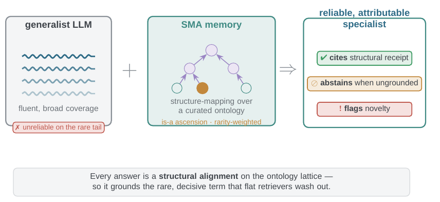
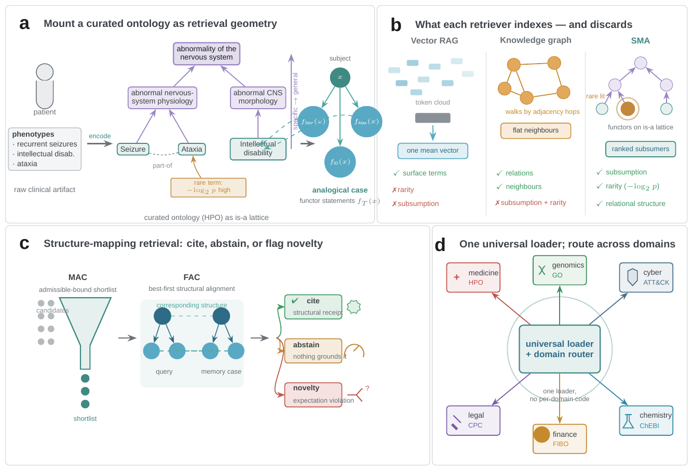
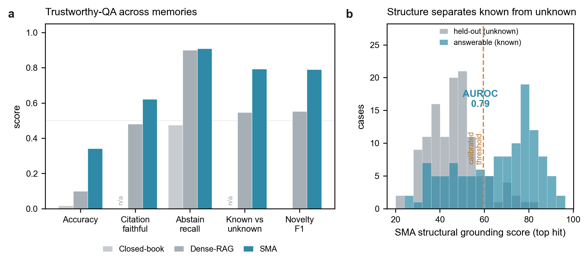
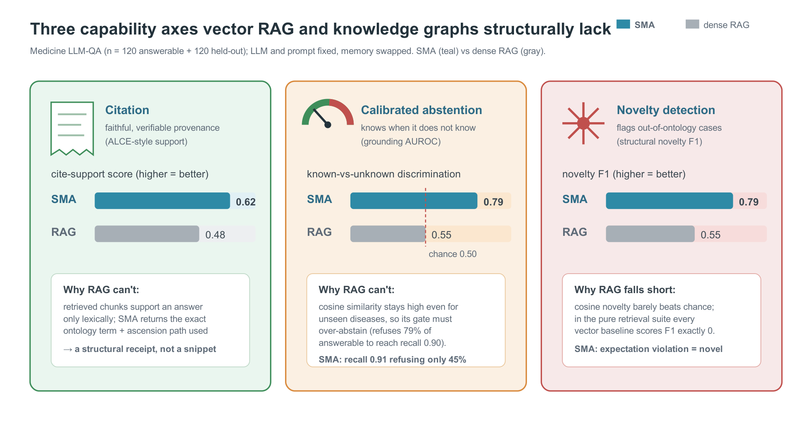
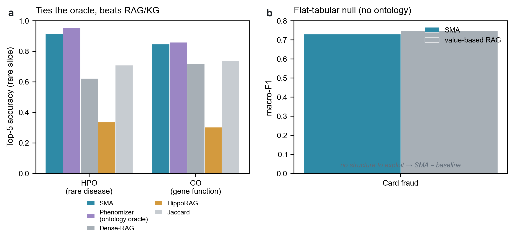
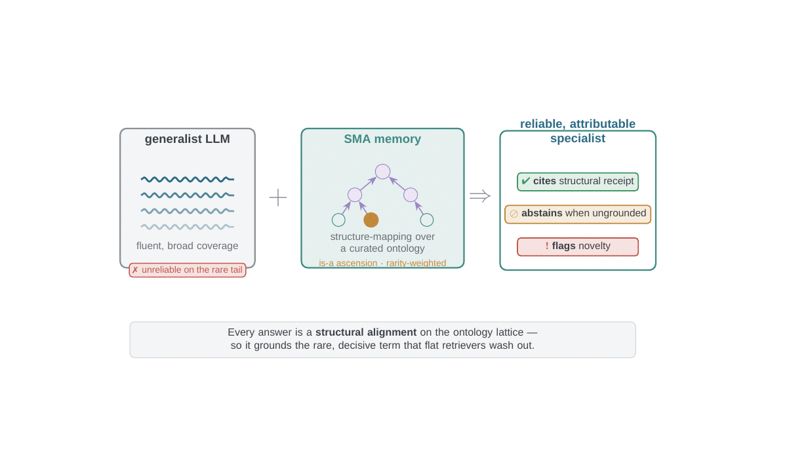

SMA-1 is a retrieval memory that grounds a language model in a curated, expert-maintained ontology. It retrieves by logical structure, the subsumption and higher-order relations that vector RAG and knowledge graphs discard. Hold the model and the prompt fixed, swap only the memory, and the same model becomes more accurate, more selective, and structurally attributable.
A generalist LLM is fluent and broad but unreliable on the rare tail. Bolt on a structure-mapping memory over a curated ontology, with is-a ascension and rarity weighting, and the same model becomes a reliable, attributable specialist. It cites a structural receipt, abstains when ungrounded, and flags novelty. These are capabilities flat retrievers structurally lack.

On a memory-swap benchmark where only the retriever varies, the SMA-grounded agent beats a strong RAG and knowledge-graph baseline suite on the rare, long-tail slice that matters most. It does so while citing structurally, abstaining when nothing grounds, and detecting genuinely novel inputs. The advantage is carried by bounded is-a subsumption plus information-content weighting, and it is reported honestly to vanish where no discriminative ontology applies.
Embedding retrieval works when the answer is frequent and lexically similar to the query, and it fails on the cases that define expertise: the rare presentation, the cross-vocabulary analogy, the long-tail entity. Knowledge graphs add typed edges but traverse them by path adjacency. Both discard the two structures an expert reasons with most: the subsumption lattice (what generalizes to what) and higher-order relations (relations whose arguments are themselves relations).
| Capability | SMA | Vector RAG | Knowledge graph |
|---|---|---|---|
| Rare / long-tail retrieval, rarity-weighted | yes✓ | ✗ averages rarity away | ✗ |
| Cross-vocabulary, zero-lexical-overlap match | ✓ | ✗ | partial |
| Subsumption (is-a) reasoning | ✓ | ✗ | ✗ no ascension |
| Structural citation, checkable provenance | ✓ | ✗ | partial |
| Calibrated abstention | ✓ | ✗ cosine always high | ✗ |
| Novelty / expectation-violation flag | ✓ | ✗ | partial |
One loader ingests any open ontology, and a registry and router select the right one per query. Every dial below is frozen at pre-registration.

A universal loader parses any OBO, OWL, STIX, CPC, or MITRE-XML source into a normalized graph and mounts its is-a hierarchy as an ascension lattice, along which specific terms match general ones with a distance penalty.
Each case becomes a functor over a subject, and the ontology's typed relations become higher-order statements that structure-mapping can reward.
An admissible bound (MAC) screens candidates without ever overestimating the true score, then best-first alignment with early stopping (FAC) returns a certified top-k.
Structure-mapping (SME) rewards systematicity through trickle-down, weighted by information content so the rare but decisive term dominates. Scores are scale-free normalized.
A calibrated gate on the raw structural score cites the structural receipt or abstains. A SAGE expectation-violation score (1 minus the best match) flags genuinely novel inputs.
Memory-swap benchmark, only the retriever varies. Baselines are BM25, BGE dense, hybrid RRF, hybrid plus cross-encoder reranking, and HippoRAG. Use the toggle to switch between the rare-slice retrieval scores and the end-to-end, LLM-in-the-loop run.
| Domain | SMA tail top-5 | best RAG | Δ tail top-5 | Cliff's δ | Holm-significant |
|---|---|---|---|---|---|
| Medicine (HPO / MONDO) | 0.949 | 0.606 | +0.343 | 0.333 | yes |
| Finance (US-GAAP) | 0.418 | 0.231 | +0.187 | 0.167 | yes |
| Genomics (GO) | 0.849 | 0.682 | +0.167 | 0.156 | yes |
| Legal (CPC, all-query) | 0.941 | 0.870 | +0.071 | 0.064 | yes |
| Cyber (ATT&CK) | 0.766 | 0.749 | +0.017 | 0.073 | directional* |
*Cyber survives Holm across domains but not a conservative Bonferroni-over-baselines selection correction (p = 0.035 to 0.17), so it is reported as directional.


SMA ties a bespoke ontology information-content oracle (Phenomizer) rather than beating it. On flat single-record tabular prediction, such as hospital readmission, credit-card fraud, and the Elliptic Bitcoin graph-fraud probe, there is no discriminative subsumption ontology to mount, so SMA reaches only parity and a flat logistic-regression baseline wins. On free-form conversational recall with no ontology, the structure-mapping encoder degenerates to baseline. The advantage is specific to structure, and these nulls are reported to delimit it.

On the left, the process tour: how a case is mounted, matched, and grounded. On the right, a grounded cyber case study, a generalist LLM plus SMA over the MITRE and CVE ontologies, streaming answers live, grounding when an identifier exists and abstaining when none does.

About 594,000 concepts across seven knowledge areas behind one retrieval core plus thin per-domain adapters, and a 271-ontology discovery catalog you can mount on demand.
SMA-1 ships as a Python library and an MCP server. Point the universal loader at any open OBO, OWL, STIX, or CPC ontology, index your observations, and retrieve by structure, with a citation or an abstention on every result.
# install $ pip install structuremappingmemory # grounded retrieval in a few lines from sma.mcp import SmaEngine e = SmaEngine() e.mount_from_catalog("hpo") # any OBO/OWL/STIX/CPC e.index_cases("hpo", cases) r = e.retrieve("hpo", term_ids=obs, k=5) # returns cited structural matches, or abstain=True